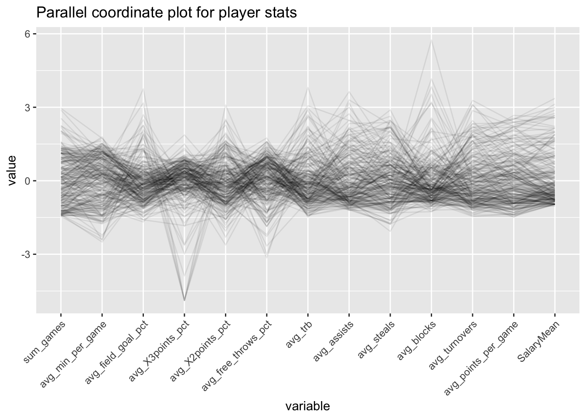

Parallel Coordinate Plot

Player Contract Salary Mean vs All Continuous Player Statistics (PCA)

Average Points per Game vs Player Contract Salary Mean (Scatterplot)

Player Contract Salary Mean vs Total Number of Games Conditioning on Age Group (Multi-facets Scatterplot)
Player Contract Salary Mean vs Team and Age Group (Heatmap)